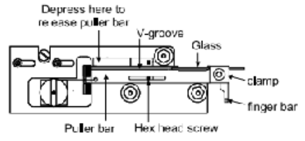
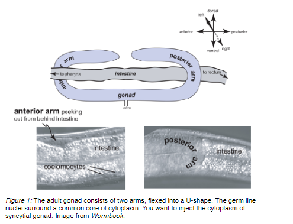
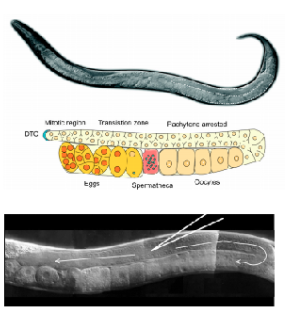

Microinjection
History: Protocol adapted from Michael Koelle (08/23/94), edited by Erik Andersen (08/10/09), Troy Meikle (04/24/18), and Kathy Vaccaro (03/09/20).
You will have a couple frustrating sessions when you first attempt this technique. Everyone seems to master injection after a few days, and it works quickly and reliably once you have some experience.
Materials
- Agarose Pads
- M9 (recovery buffer)
- Sutter Instruments P-87 needle puller
- Glass 1BBL w/FIL 1.0 mm 4 IN filaments (WPI #1B100F-4)
- Halocarbon oil series HC-700, 8 oz. bottle (Sigma-Aldrich, H8898-50ML)
Agarose Pads
Make a lot of these at a time; they last forever.
-
Using a transfer pipette, drop melted 2% agarose in sterile water on a 24x50 mm coverslip. The size of the droplet should be moderate - not too large, not too small, though this isn't precise nor a rigid requirement.
-
Drop a second coverslip on top, which will flatten the agarose into a thin pad. Try to avoid air bubbles, but a few won't hurt anything.
-
When the agarose has hardened (> 5 s.) slide off the top coverslip.
-
Breathe on the coverslip to see on what side the pad stuck. Use this top coverslip as the bottom coverslip to make the next pad; its thin coating of agarose will make the pad stick to it instead of the fresh top coverslip.
Note: This process can be made into an assembly line by lining up many coverslips on the edge of a bench (so you can quickly pick them up) and an equal number of coverslips perpendicular to the first set behind them. Spot the perpendicular coverslip, pick up the one at the edge of the bench, and drop it on top. Drop on the next coverslip to repeat on down the line. You can make 200 coverslips in about a half an hour.
-
Place the coverslips flat in a box and cover the box with aluminum foil to dry. The box can be left out on the bench overnight, or bake in an oven at 65°C for 1 hr., or bake in an 80°C oven for 15 min.
-
Once dried, you can store the pads in the original coverslip box.
Microinjection Needles
We use "Glass 1BBL w/FIL 1.0 mm 4 IN" filaments (#1B100F-4) from World Precision Instruments, Inc. Keep these clean and always immediately recap the tube after removing a filament.
Needle Puller
We use a Sutter Instruments, model P-87 needle puller.
-
Turn the machine on (switch at left side, front).
-
We use program 0 to pull needles for C. elegans microinjection. Press 0 on the keypad to use program 0.
Program 0: Pressure = 500. - Heat 970, Pull 0, Velocity 30, Time 250 - Heat 960, Pull 0, Velocity 40, Time 250 - Heat 960, Pull 27-301, Velocity 60, Time 252
1 Depending how long the machine has been running, it will pull needles a little differently (how "hot" it is). It is recommended to turn on the machine ~20 min. before pulling needles for injections. Sometimes it is needed to pull a couple of "fake" needles before the machine gets it right.
-
Insert a glass filament into the groove of one of the pullers without touching your fingers to the part that will be heated or the filament. Loosen the clamping knob if necessary to allow the glass through.

-
Tighten the knob of the clamp to hold the needle in place.
-
Depress the spring stop on each puller bar to release them from their catch position (shown above).
-
Pull both bars towards each other using the finger bars. Hold bars in position using the thumb an index finger from one hand. The hex head screw should be touching the end slot in both puller bars.
-
Loosen both clamping knobs, carefully slide the glass through the holes in the side of the heater chamber and into the groove of the opposite puller bar.
-
Tighten down the clamping knobs.
-
Press the green "PULL" button on the keypad to pull the needle using Program 0. The program should loop only once and finish at the last line of the program (Line 3). If it finishes early, try pulling a needle once or twice more to warm up the machine.
Making the DNA Solution
A few notes:
-
All plasmid DNA to be injected should be suspended in distilled water.
-
The final concentration of plasmid DNA should be 100 ng/μL
- Generally our receptor transgenes are injected at 30-50 ng/μL
- Co-injection markers are typically 5-15 ng/μL (except rol-6(su1006) which needs to be >50 ng/μL)
- use pPD95.75 to achieve a final concentration of 100 ng/μL
-
Possible co-injection markers:
- myo-2p::GFP (5 ng/μL)
- unc-122p::GFP (aka coel::GFP)
- pRF4 (rol-6(su1006)) - we have this genetype in pjCeKC10
Setting up the scope, loading the needle, mounting, and breaking the needle
Set up the scope
We use a Zeiss AX10 microscope with 10X and 40X objectives. Mounted on the scope is a Narishige micromanipulator. Pressure is generated by an Eppendor FemtoJet and an air compressor. Turn on the microscope using the wheel button to the right of the body. Turn on the air compressor (on the floor) by switching the switch from "OFF" to "AUTO". The FemtoJet can handle pressures no more than 120 psi so ensure the air compressor's pressure gauge is set below that.
Turn on the Eppendorf FemtoJet (on the table, next to the microscope) using the switch on the back right.
The pressure should be set to: Pi is set to ~600-1800 hPa (injection pressure - depends on how large the needle broke- if the tip is very small, use a higher pressure to ensure you are injecting enough volume, if it is large, use a smaller pressure so you don't load too much volume into the worm and kill it); it will take some practice to know what works best for you.
Pc is set to 180 hPa (compensation pressure). This will also change depending on how large the tip has been broken (larger tip = smaller Pc, don't go lower than ~70 hPa).
The foot pedal is set to inject when depressed (time is blank on screen). It will stop when released. If the needle gets clogged, you can use the clean button to blast high pressure through the needle. Refer to "InjectionRigPreparation.pdf" in Protocols/Microinjection for more instructions on set-up, shut down, and maintenance of the air compressor and the FemtoJet.
Loading the needle
-
Before loading the needle, add a very small amount of green food coloring to the DNA and centrifuge the DNA solution for 10 minutes at maximum speed to pellet particulate matter that might clog the needle.
-
While the solution is spinning, take Drummond Scientific 10 μL calibrated glass pipette and pull it out to a fine tip over a Bunsen burner (about ⅕ is original thickness). This step takes a little practice.
-
Break the end of the pulled out pipette.
-
Once the spin is done, use the mouth aspirator and your pulled pipette to aspirate a tiny amount of DNA solution. Insert the tip into the pulled needle and puff out a little bit of DNA solution into the needle.
-
Put the needle in a large petri dish with a strip of clay running down the dish with grooves in it for the needles, and wait 2-3 min. for the DNA solution to move to the tip via capillary action.
-
Examine the needles under a dissecting microscope to ensure that none have particles or bubbles in the tip (these will clog the needle). Bubbles sometimes clear from the tip.
OR
- Use a pipette to pipette DNA into the back of the needle. Wait 2-3 minutes for the DNA solution to move to the tip via capillary action.
Mount the needle on the scope
-
Press menu/enter on the FemtoJet. Press menu/enter again on the "change capillary" option (do this only if you are replacing a clogged/broken needle during use).
-
Remove the old needle by unscrewing the clear grip head assembly that holds the needle.
-
Insert your needle with the back end first so as not to break the tip. Make sure about 1 cm of the needles comes out past the back of the needle holder head.
-
Tighten the needle by screwing the assembly onto the manipulator arm.
-
Ensure the needle is in the micromanipulator at an angle of ~15-30 degrees to the stage.
-
Turn the three knobs on the fine and coarse control of the micromanipulator to the middle of their range.
-
Using the course controls (knobs on the part of the micromanipulator mounted on the stage), move the needle tip left/right and forward/backward until it is just above the objective. You will see it glowing in the light shining down from the condenser.
Breaking the needle
-
Break a coverslip in half and put it onto a slide with the broken edge facing the needle.
-
Place a drop of halocarbon oil on the broken edge of the slide.
-
Focus on the edge of the broken coverslip with the halocarbon oil on it.
-
Using the fine controls, carefully lower the injection needle towards the stage until it is in the same focal plane as the coverslip. At this low power, you can't see the actual tip, so you may have to try the 40X objective.
-
Using the fine controls or the gliding stage (your preference), slowly move the injection needle along the edge of the coverslip to break the needle on a angle. Be VERY careful and gentle. The needle pulled using program 0 has very little leeway to be broken. Break a very tiny piece off to open the needle. Any larger and it will be too big to be used (as it will kill the worms).
-
To check the needle, press the foot pedal to look for flow out of the needle. You should see rapid laminar flow out of the needle and back towards the shaft, but no flow out at resting pressure. If there is no flow when you press the pedal, the needle isn't broken. Try again. You will have to see by experience what the optimal flow rate is. You want to be able to flood the gonad in about 3 seconds of flow at Pi.
-
When done breaking the needle, use the fine control to lift the needle up out of the oil in preparation for injection.
Mounting worms on an injection pad
-
Take out an agarose pad and breathe on it (about 1 long breath) to moisten it. If it is too dry, the worms will dry out and die - too wet and the worms won't stick well.
-
Place a drop of halocarbon oil on the pad. Lay the coverslip on the top of an upside down lid of a small worm plate. The pad should be at about the same height as the worms on a plate so you don't have to focus around too much when switching back and forth.
-
Place a small dot of halocarbon oil on a part of the worm plate with no bacteria. Pick some worms from the bacterial lawn to the oil. This just makes it easier to get the worms off the pick when transferring them to the agarose pad. Most people like to use the adults 24-36 hr. post-L4. These animals have large robust gonads.
-
Using a worm pick with oil as glue, transfer adult hermaphrodites from the oil dot on the worm plate to the oil drop on the agarose pad. If there is still adhering bacteria, push the worms around in the oil with a pick until the bacteria come off.
-
Use a strand of eyebrow hair taped to a glass pipette to orient the worm and stick it to the agarose pad.
Note: As a beginner, stick a single animal on a pad. The trick is to stick the animals down in the same orientation so that each animal's vulva is pointed to the same side. You don't want the syncytial gonad to be on top or underneath the animal. When the animal is in the oil, the syncytial gonad is visible as two clear areas towards the anterior and posterior of the animal. To stick the animal right, wait until it is floating in the oil so that it's body flexures go sideways, not up and down, and pat the animal down on the agarose pad with your pick until it is stuck to the pad. Avoid storking or patting the animal on the head, which can kill it. Ideally, the animal will be fully immobilized except for its head, which will still be free and wiggling. the animals stick best when they first touch the pad. If you fail to stick them on the first try, the pad will not stick to the same part of the animal again. Practice sticking down a whole set of animals in a line in the same orientation for assembly line injecting. Once the animals are in the oil, work reasonably fast to get the procedure over with before the animals dehydrate (roughly 10 min.).
Injection
-
Raise the injection needle off of the stage to allow room to put the injection pad with worms on the floating stage.
-
Using the 10X objective find the worm, make sure it is in the correct orientation (vulva away from the needle). You can move or rotate the entire stage to move the worm, although some like to move the coverslip itself. It is best to have the worm at a 45° angle to the needle; this maximizes the path length for the needle inside the gonad, helping to make sure you get the tip in the gonad instead of going all the way through and out the other side.
-
Carefully lower the needle into the focal plane with the fine adjuster. At this point, you only need to move the needle up and down with the micromanipulator; you always move the worm, not the needle, up/down left/right, by moving the whole stage.
-
Change to the 40X objective and focus on a syncytial gonad arm. This structure looks like a sausage-shaped clear area surrounded by nice round nuclei. The clear area has tiny speckles (See Figure 1 below).
-
Focus on the center of the gonad (in the Z plane) so that you see a nice row of nuclei on either side of the sausage. Using the fine adjuster, move the needle up/down until its very tip is in focus.

-
Gently move the needle so that it is pressing against the worm at a point where the syncytial gonad is pressed up against the body wall, and so that the needle tip will end up inside the gonad after it penetrates the body wall.
-
There are many techniques to penetrate the body wall and enter the gonad. Here are two: (1) use your right index finger to gently tap the micromanipulator on the little box with the ball joint in it (just above where the arm the needle is on is attached). This vibrates the needle a little so that it punctures the worm. (2) slowly move the floating stage until the needle presses up against the body wall. Push slightly harder to enter the gonad. Hopefully, the tip of the needle is in the gonad now.
-
Press the pedal to start the flow of DNA solution. If you're in the gonad it should be obvious; as the gonad is flooded it bloats like you're filling a sausage, and you can sometimes see the nuclei in the syncytium reacting to the flow. You want to put as much liquid in the gonad as possible; hopefully it will flow all the way around turn of the gonad. You will be able to see the green dye filling the gonad. A good rule of thumb is to inject until you see a good amount of liquid has made the turn and has flowed into the proximal gonad, and then shut off the flow.
-
To stop the flow press the pedal again and move the animal away to get the needle out. Mello et al. (EMBO J. 10:3959-3970, 1991) show excellent photographs of a gonadal flood.
Note: Usually one gonad arm is much easier to see than the other, so some people only inject the easy gonad arm. Others try to inject both. If you miss the gonad, you will see green liquid filling the pseudocoelom. Usually, the animal will survive, and you can just try again. It is surprisingly hard to kill the worm by jabbing and injecting it incorrectly.
-
After you finish a worm, use the fine controls to lift the needle out of the oil before moving the stage to find a new worm, or removing the pad.
Note: Eventually needles tend to clog and must be changed.

Recovery
-
Put the pad under the dissecting scope (on the inverted plate lid) and using a mouth pipette place a drop of recovery buffer on the worm.
-
This action will form a channel, and the recovery buffer will form a layer underneath the oil in which the worm will float.
-
Mouth pipette the worms in recovery buffer onto a fresh plate.
Note: I put six worms (from the same injection) onto the same plate.
Results
-
Three to four days later, score the progeny of the injected worms for the co-injection marker phenotype. Each animal in the F1 is considered an independent transformant (even if they come from the same injected P0). Therefore, each F1 should be picked to a different plate to try to get independent lines.
-
Three days after picking individual F1 transformants, check the plates to see if these have transmitted the co-injection marker to the next generation at a high rate (ideally, up to 90-100% of progeny for really good injections, but over 50% can be good enough for some strains). Continue to propagate these plates to the F2 generation and beyond (to ensure they don't suddenly lose the marker). Perform lysis reactions and PCRs to check for the desired transgenes in these lines. Once confirmed via PCR, pick the three highest transmitted independent lines to freeze and name with the lab naming convention "ZAM#". Chunk from the F2 plates (we want to freeze strains at the "earliest" point of their birth).
Note: Typically, people inject 10-20 P0's, and you should expect to get 0-300 F1 transformants. Of the F1 transformants, typically about 5-70% will transmit the array, allowing a line to be established. These lines transmit the array to 30-100% of their progeny. There is variation among lines transformed with the same DNA. For example, only a fraction of lines transformed with a cosmid/co-injection marker might give rescue of a mutant phenotype, and the strength of the rescue (the penetrance and/or expressivity) will vary among lines that show rescue. For a conservative analysis of gene function, one should look at six lines before they tentatively believe any result. Additionally, GFP fusion constructs can be used to identify the tissue or cell where your favorite gene is expressed. Transgene arrays are composed of concatemers of whatever was injected in random order, orientation, and composition. For example, transgenes can combine the co-injection marker promoter to GFP. Be careful when interpreting transgenic lines, either rescue or expression. Some lines transmit at only a few percent per generation. The frequency of transmission varies from animal to animal. Keep lines with low transmission, as they are more useful than high transmitting lines for integrating the transgene (integration creates 100% transmission). Also, transmission, rescue, and expression from some transgenes change over time, likely due to changes in chromatin structure.